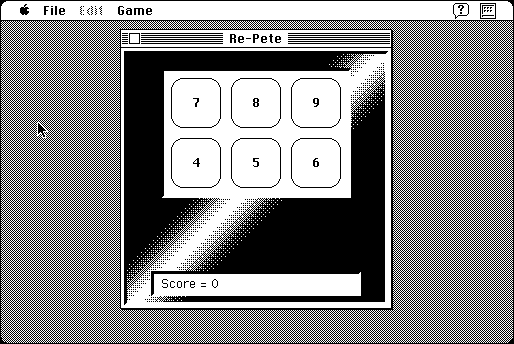

Download
re-pete2.2.zip (57K) Re-Pete 2.2 repackaged into a zipped hfs disk image and checksum file. The disk image can be mounted with Mini vMac.
re-pete2.2.sit.hqx (74K) Re-Pete 2.2 in the original format.
copyright: Tom Bender (Trans-Tex Software)
mod date: Jun 30, 1996
license: freeware, source $5
official url :
Trans-Tex Software
Memory game. For "Mac OS 7 thru 9".

If you find these downloads useful, please consider helping the Gryphel Project, which hosts them.
Here are the md5 checksums for the downloads, signed with Gryphel Key 5:
--------- GRY SIGNED TEXT --------- 243527f542ed36b7dafd8bf49f6521ba re-pete2.2.zip 0868ad780f4c7b40c7b32b8f4711f7d8 re-pete2.2.sit.hqx ------- BEGIN GRY SIGNATURE ------- Gry/4Xa8CFcUzxdN/MzWA0gB91Z7GVVhpYGJ4B2DPdx7Q/RwwhopirUeKO/oW5Kg v2cmQ/A5sPnqUzQqmxmxr1k/1eWjmoLchOiLBdyfbeGhmdaVcVxOeEZS5J4kezP6 RUZT6IV1G8D3ibM0dWtFMfclYNdQ/jru82ZF9aSZyer3rgyCtGR8THGIUulaYqJo -------- END GRY SIGNATURE --------